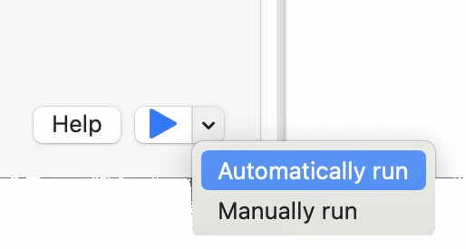

After starting the application a small Postscript program is shown in the editor part of the window.
You can enter text as Postscript commands only on the left hand side. The right hand side can only be increased or lowered in size and panned. Using a right click into this part some options to manipulate the rendered image as well as to save the PDF onto a drive are available.
By pressing the blue play button a "Write to ps" file save dialog will be displayed, where you need to define a storage place on one of your drives. This is necessary as the application runs in a Sandbox and can't access the file system directly.
After having pressed the Save button the Postscript file will be rendered and will be displayed on the right hand side.
Replace the "36" font scale in the 3rd line by typing 72 over it. After pressing the play button the text on the right hand side will be increased.
Similar to the Xcode playground you can switch to automatic mode by selecting Automatically run holding the small triangle besides the Play button.
Select the "4" in front of the setLineWidth expression and replace it by 9. The number will be displayed in black, changes to the number color and the width of the underline increases.
Replace the 9 by letter "B". This provokes an error and the Postscript file can't be rendered. In this case a yellow exclamation mark is blinking at the right upper corner of the PDF section.
Clicking onto the exclamation mark will display the error message: "Poscript file couldn't be converted". In this case the letter B is the offending comamnd indicated in the error message "OffendingCommand: B; "
Correct the error by replacing the letter B with "4" again and the file will be rendered again.